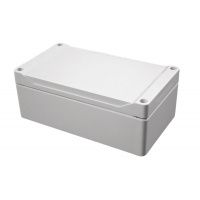
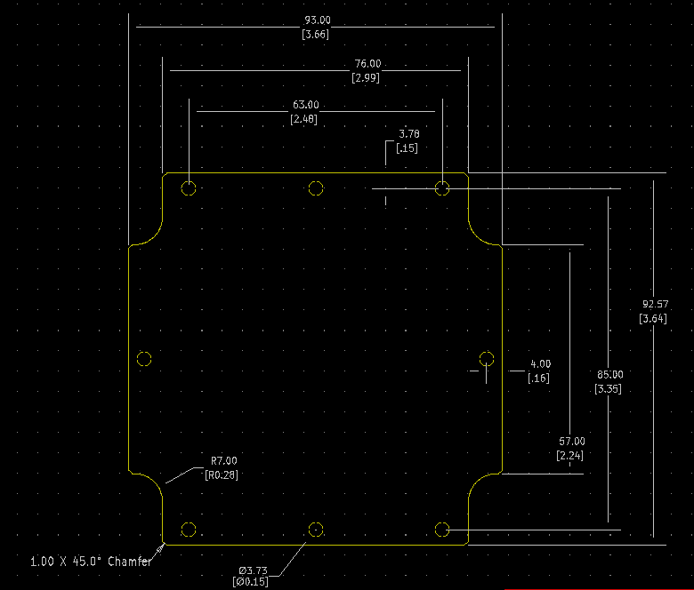

Project template containing the recommended board layout for Hammond Manufacturing 1554L:
Gray: 1554LGY - 164-1554LGY-ND
Gray: 1554LAGY - 164-1554LAGY-ND
Gray, Smoke Cover/Door: 1554LA2GYSL - 164-1554LA2GYSL-ND
Gray, Clear Cover/Door: 1554LA2GYCL - 164-1554LA2GYCL-ND
Gray: 1554LA2GY - 164-1554LA2GY-ND
Gray, Smoke Cover/Door: 1554L2GYSL - 164-1554L2GYSL-ND
Gray, Clear Cover/Door: 1554L2GYCL - 164-1554L2GYCL-ND
Gray: 1554L2GY - 164-1554L2GY-ND
Features:
- Ideally suited for mounting printed circuit boards or DIN rail mounted components (see photo features below for details).
- ABS Versions are molded from general purpose material which carries a flammability rating of UL94-HB. For indoor use.
- Polycarbonate versions are UV stabilized for outdoor use. Gray polycarb carries a UL94-5VA rating, while clear and smoked lids carry a UL94V-0 rating.
- Polycarbonate versions are cUL and UL 508A listed (File # E65324). ABS plastic versions are not UL listed.
- Enclosure color is a light gray (RAL 7035).
- Gasketed lid with two piece “tongue & groove” construction provides protection against access of oil, dust and water.
- Replaceable gasket is one piece made from high temperature, U.L. listed silicone. Supplied loose inside the enclosure (not pre-installed).
- Polycarb versions are designed to meet NEMA Type 4, 4X, 6, 6P, 12 & 13 ratings which meet and exceed IP ratings up to and including IP68. (Except 1554/55 V size which is 4,4X only)
- ABS Plastic versions are designed to meet IP66.
- Lid is secured with included M4 stainless steel machine screws which are threaded into integral stainless steel bushings for repetitive assembly & disassembly. All hardware is stainless steel to avoid corrosion caused by dissimilar metals.
- Lid screws are self-captivating (lid holes are threaded with the first installation of lid screws)

|

|
The "Dwgs.User" layer contains all critical dimmensions in milimeters[inches].
The "Edge.Cuts" layer contains the maximum board outline and holes to align with board standoffs.
PCB Preview:
